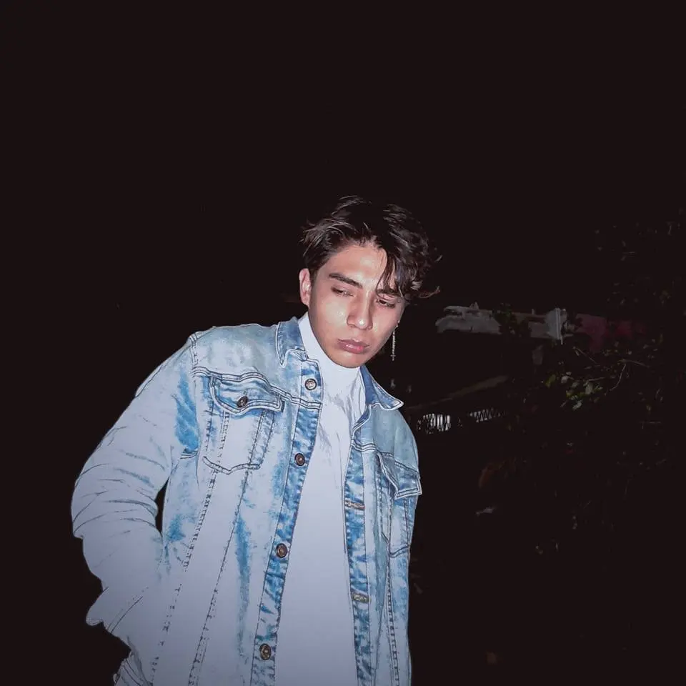

Soy desarrollador con enfoque en frontend y formación fullstack. Me gusta pensar el software como algo más que funcional: algo que transmite. Trabajo con tecnologías como Kotlin, C#, Python y Java buscando siempre que diseño y lógica tengan propósito. Soy analítico, curioso y reflexivo. Me mueven la empatía, la creatividad y la idea de que programar también es una forma de contar historias. No solo construyo código, construyo experiencias que conectan.
PixDev es una aplicación móvil que estoy desarrollando con Jetpack Compose, pensada para facilitar la creación y gestión de proyectos directamente desde el teléfono. Permite definir los requerimientos clave que debe cumplir tu proyecto, organizar visualmente cómo se desarrollará, asignar colores temáticos para mantener una coherencia estética, y crear tareas que se van marcando como completadas mediante una barra de progreso interactiva. Además, puedes editar el nombre y los detalles del proyecto en cualquier momento, adaptándolo a medida que evoluciona. PixDev está diseñada para acompañarte en el proceso creativo, ya sea que estés trabajando en una app, un videojuego o un prototipo funcional, todo desde una interfaz intuitiva y portable.
Tlali es un videojuego para computadoras y telefonos moviles de plataformas en desarrollo con un estilo 2.5D, que combina modelos 3D con sprites 2D para crear una experiencia visual única. El proyecto se inspira en la cultura moderna de México, especialmente en la región de Tlaxcala, integrando elementos simbólicos y estéticos en un mundo con tintes post-apocalípticos. El nombre, que significa "Tierra" en náhuatl, refleja la conexión del juego con sus raíces culturales. Aunque la narrativa aún está en construcción, la propuesta principal gira en torno a enfrentar enemigos y jefes mientras se explora un mundo influenciado por las tradiciones y los paisajes mexicanos.
EDooCA es un proyecto colaborativo en desarrollo que busca apoyar la enseñanza del Paradigma Orientado a Objetos de forma visual e interactiva. La app guía al usuario por los cuatro pilares de la POO a través de ejercicios prácticos y explicaciones multimedia. Mi principal contribución ha sido el diseño completo de las interfaces y elementos visuales en estilo pixelart usando Aseprite, mientras que el desarrollo se realiza en Unity en conjunto con una compañera. EDooCA combina lo educativo con lo lúdico, facilitando el aprendizaje técnico desde una experiencia más amigable y visual.
Tlakoyalistli es mi primer videojuego, inspirado en la atmósfera y mecánicas de Hollow Knight. Desarrollé dos niveles completos donde me encargué tanto del arte como de la implementación. Utilicé Krita para diseñar los controles, los fondos y los sprites, y Piskel para animar tanto al personaje principal como a los enemigos. Todo el desarrollo se llevó a cabo en Unity, lo que me permitió integrar el arte con la lógica del juego de forma fluida. Este proyecto marcó mi inicio en el desarrollo de videojuegos, combinando ilustración digital, animación y programación en una sola experiencia jugable.
Este fue un proyecto colaborativo enfocado en la detección de problemas de ansiedad (DPA) mediante una aplicación móvil. Mi participación se centró en el diseño visual: creé el logotipo utilizando Canva y diseñé las interfaces en Figma, cuidando la claridad y accesibilidad en cada vista. Mientras que uno de los integrantes del equipo se encargó del desarrollo en Android Studio, el resto del equipo se ocupó de la documentación y la justificación técnica del proyecto.
Seminario de Ingenieria en Computación 2021
Seminario de Ingenieria en Computación 2022